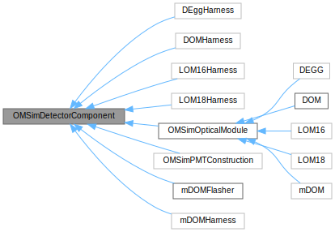

|
OMSim
Geant4 for IceCube optical module studies
|
|
OMSim
Geant4 for IceCube optical module studies
|
This framework offers tools to simplify geometry construction and material definitions, as well as a detailed PMT response mechanism. This page provides a brief introduction to the main features.
User-defined material data are stored in JSON files under /common/data to avoid filling source code with numbers. The OMSimInputData class (see OMSimInputData.hh) is responsible for processing these files and loading the material properties into the Geant4 framework. It uses the OMSimMaterialHandler class to handle the specifics of material creation and property setting.
The OMSimMaterialHandler class is the core component for creating and modifying materials. It provides several key methods:
OMSimMaterialHandler::processMaterial: Creates a new material or modifies an existing one based on the data in the input file.OMSimMaterialHandler::processSurface: Processes and returns an optical surface defined in the input file.OMSimMaterialHandler::processExtraProperties: Adds additional properties to an existing material.OMSimMaterialHandler::processSpecial: Handles special material types like IceCube ice or scintillators that require custom processing.Materials created via this class can be retrieved using Geant4's conventional method G4Material::GetMaterial. The OMSimInputData class also provides a wrapper method OMSimInputData::getMaterial to handle default parameters and special "argument materials".
For optical surfaces, OMSimInputData provides the method OMSimInputData::getOpticalSurface, which doesn't exist in Geant4 by default.
Different materials may require different types of properties and processing. The OMSimMaterialHandler class can handle various material types, including:
Special processors for these materials are implemented in separate namespaces (e.g., IceProcessor, ScintillationProcessor) and can be passed to the OMSimMaterialHandler::processSpecial method.
PMT construction data is also stored in JSON files (/common/data/PMTs). This data is loaded into a "tree" (essentially a dictionary containing the JSON file's keys and values) in OMSimInputData::m_table. This approach allows for flexible PMT construction without defining a unique class for each PMT type.
To add new material data:
/common/data.OMSimInputData::processFile to handle the new file type if necessary.For simpler tasks, you can use the static method Tools::loadtxt provided by the Tools namespace.
Each optical module and harness is defined in its respective class, located in the /common/geometry_construction/ folder. These inherit from the virtual base class OMSimOpticalModule.
This inheritance ensures the definition of functions to retrieve the pressure vessel's weight (necessary for radioactive decay studies) and the count of PMTs inside the module. The OMSimOpticalModule interface inherits from OMSimDetectorComponent, a general helper class simplifying construction. Most OMSim geometries inherit from this class, as illustrated in the dependency diagram below:

The OMSimPMTConstruction class constructs PMTs. There are two PMT construction approaches. The first is simple, with a solid photocathode where all entering photons are recorded. This mode can be activated using the argument --simple_PMT. The second, default, approach simulates the photocathode as a thin layer, also representing the internal components accounting for internal reflections. For more information, refer to Chapter 9 of this thesis.
In the complex PMT model, the photocathodes are not real volumes, but are defined as a boundary condition between the glass and internal vacuum. The original G4OpBoundaryProcess of Geant4 was modified in OMSimOpBoundaryProcess.cc in order to simulate the optical propierties of thin layers (see Nicolai Krybus's thesis).
The construction of different PMT models (e.g. the 3'' or 10'' PMTs) is quite similar. However, the frontal window shape varies among models, leading to diverse combinations of ellipsoids and spheres.

For most optical modules, complex geometries like holding structures and harnesses are constructed from CAD files (.obj - see CAD geometries). Using CAD files might increase the geometry construction time. However, once the geometry is initialized, the rest of the simulation proceeds as usual. Therefore, users are advised to structure their simulations to minimize repeated geometry construction. The mDOM is however fully constructed natively in Geant4. For details on the harness implementation, refer to this Bachelor thesis.
The following geometries cannot be visualized:
--simple_PMT instead)Below is an overview of the available geometries:
To recreate the geometries, use the following commands:
or
For photon detection in both simple and complex geometries, the photons must be absorbed within the photocathode. The photocathodes are made sensitive through the OMSimSensitiveDetector class, following Geant4's G4VSensitiveDetector pattern. This configuration is achieved by invoking OMSimOpticalModule::configureSensitiveVolume (or OMSimPMTConstruction::configureSensitiveVolume when simulating a single PMT).
It is essential to invoke this method in the detector construction, as it needs the instance of OMSimDetectorConstruction to call G4VUserDetectorConstruction::SetSensitiveDetector for successful operation in Geant4 (refer to OMSimDetectorConstruction::registerSensitiveDetector).
Important: Creating a new instance for each module to ensure that hits are correctly associated with their respective modules and prevents cross-talk between detectors.
Here's an example of how to properly create and configure sensitive detectors for multiple optical modules:
Every step of a particle through the photocathode triggers the OMSimSensitiveDetector::ProcessHits method. It verifies if the particle is a photon and whether it was absorbed. For a deeper understanding of Geant4's philosophy concerning G4VSensitiveDetector, consult the Geant4 guide for application developers.
In OMSimPMTConstruction::configureSensitiveVolume, PMTs are associated with an instance of OMSimPMTResponse, contingent on the PMT under simulation. This class offers a precise PMT simulation by sampling from real measurements, obtaining the relative transit time, charge (in PE), and detection probability (using the measured scans from this thesis). For details, refer to Section 9.3.4 of the linked thesis.
This sampling is performed for every absorbed photon in OMSimSensitiveDetector::ProcessHits invoking OMSimPMTResponse::processPhotocathodeHit. The position of the photon on the photocathode is retrieved, the 2D-histograms of the gain, SPE resolution, transit time and TTS are interpolated for that position and the charge / transit time of the photon is sampled from a Gaussian using the interpolated values as mean (in case of gain / transit time) and standard deviation (in case of SPE resolution / TTS).
If you use the complex PMT model, you will obtain detection probability weights, which are the product of quantum efficiency (QE)—which varies with photon wavelength—and collection efficiency weight (which depends on absorption position). These weights are calibrated to match measurements. For more technical details, see the section Matching PMT Efficiency to Measurements.
In contrast, with the simple PMT model, the detection probability weight is solely the QE. Since the measured QE is reduced due to absorption in the PMT glass, the simulated tube glass will have no defined absorption length.
The absorbed photon data is managed by the OMSimHitManager global instance. It maintains a vector of hit information (HitStats struct) for each sensitive detector. To analyze and export this data, use the OMSimHitManager::getSingleThreadHitsOfModule method to retrieve data for the current thread, or OMSimHitManager::getMergedHitsOfModule to obtain merged data from all threads. Note that OMSimHitManager::getMergedHitsOfModule works only if OMSimHitManager::mergeThreadData has been called (happens at the end of the run when OMSimRunActio::EndOfRunAction is called). For analysis or storage at the end of an event, handle each thread separately as events end asynchronously. For practical examples, refer to the methods in OMSimEffectiveAreaAnalysis and OMSimSNAnalysis::writeDataFile.
An additional feature allows for the direct application of a QE cut. This ensures that only absorbed photons passing the QE test are retained in OMSimHitManager. To enable this feature, provide the "efficiency_cut" argument via the command line. In this case OMSimSensitiveDetector::ProcessHits will call OMSimSensitiveDetector::isPhotonDetected and break early if it returns false, without storing the photon information. In most scenarios, it's not recommended to use –efficiency_cut since it reduces your statistics. It's generally better to perform post-analysis using the saved OMSimPMTResponse::PMTPulse::detectionProbability for each absorbed photon. In case that efficiency_cut is active and the photon is stored, its OMSimPMTResponse::PMTPulse::detectionProbability will change to 1, since it was detected.
For some studies, you might want a volume to detect photons, without this necessarily being a PMT. For such cases, the framework has a provision in place: use the OMSimSensitiveDetector and pass DetectorType::GeneralPhotonDetector as its constructor argument.
In this case, the OMSimSensitiveDetector::ProcessHits will use an instance NoResponse as PMT response, which is just a dummy placeholder.
Remember to inform the OMSimHitManager that this detector is equivalent to "a single PMT", ensuring internal vector sizes adjust accordingly.
This approach ensures a smooth integration of the photosensitive volume within the current system. Below is an example illustrating how this can be incorporated within the detector construction:
In this case, OMSimSensitiveDetector::ProcessHits will store all absorbed photons. The number of photons absorbed will depend on the absorption length of the material connected to the logical volume. If you want it to be 100% efficient, use the material RiAbs_Absorber.
If there's a need to make a volume sensitive to particles other than photons, add a new entry to the DetectorType enum (in OMSimSensitiveDetector.hh) and incorporate a new method that handles this scenario in OMSimSensitiveDetector::ProcessHits. You might also track these particles in OMSimTrackingAction or OMSimSteppingAction, but using a class derived from G4VSensitiveDetector aligns with the philosophy of Geant4.
If you want to inspect the properties of photons at a given location in your simulation without terminating them, you can use the BoundaryShellDetector. >Important: This detector captures information when a photon leaves the corresponding logical volume.
Example from Figure 1:
With this configuration, photon information will be recorded at the exit of the sphere with a radius of 24 cm, either because the photon entered the 23 cm-radius sphere or because it left the volume without ever touching it.